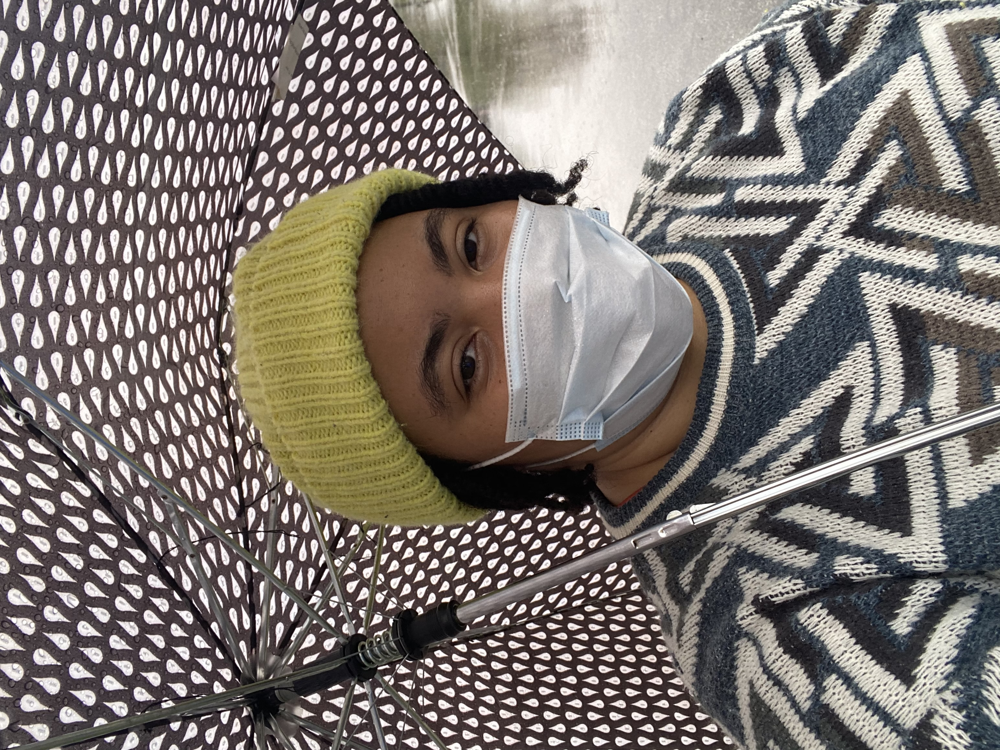

About Me
My name is Jasmine Bailey and I am an Educator from Oklahoma, currently based in Cleveland, Ohio.
I am passionate about youth development and love to learn new things. I am a life long learner and am always looking for ways to improve my skills.
I graduated from Ohio University in Athens and spent a summer in India learning about different cultures and working with a non profit that worked with underprivleged youth. I am a City Year alumna and spent my time in Cleveland leading a team of educators in the classroom and afterschool programming at Glenville High School.